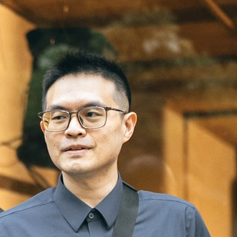

Communication Systems × AI · Hsinchu, Taiwan
I bring AI into the heart of the modem — where cellular PHY meets machine learning, from 3GPP standards to models running on live silicon.
mtk21750@gmail.com / LinkedIn / Google Scholar / +886 989 158 362

Senior Engineer in Communication System Design (5G-Advanced / 6G) at MediaTek, working where cellular PHY meets machine learning. My flagship work — an AI-accelerated uplink proof-of-concept (AI Transmit Diversity) — was an official AI-RAN Alliance demonstration at MWC 2026 (validated with Keysight) that delivered up to 30–40% cell-edge uplink gains, framed within a Model Lifecycle Management (LCM) architecture for AI in the air interface. Six years across 3GPP RAN1 / RAN2 standardization (PHY-to-RRC), PHY-to-MAC system-level simulation, and on-device machine learning deployed to modem MCU / DSP — from quantization-aware training and model compression to live silicon. IEEE-published in 5G / NB-IoT system prototyping (53 citations, h-index 4); co-inventor on an allowed US patent (US/EP/CN family). Currently building agentic AI for system-level simulation and ray-tracing channel modeling at the AI-RAN frontier.
develop and develop-nb-iot branches (LTE / NB-IoT / 5G).Full record & citations on Google Scholar — 53 citations · h-index 4.